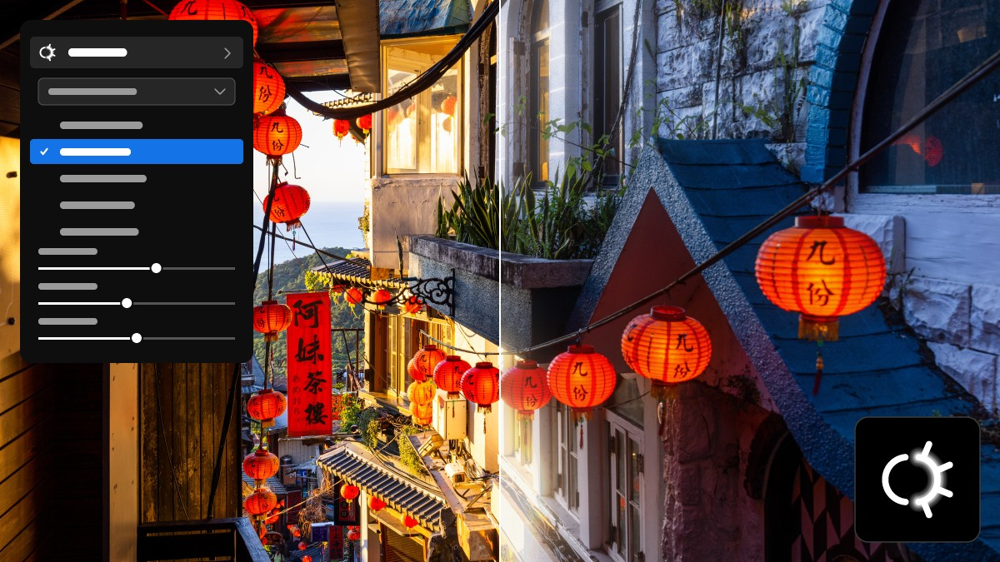

Denoise checkbox + Amount
部分一致支持的马赛克 RAW 可启用 Apple RAW 9 神经去马赛克与降噪。新建照片或输出参照 DNG 配方启用摄影 VGG7 后始终保留模型的完整色度降噪，0–100 仅改变亮度降噪。旧配方按原始 RGB 强度重开。支持撤销、重做、预览和 TIFF16 导出。
点击面板跳转。建议优先处理 P0（0 项未完全具备），再处理 P1（1 项）与 P2（2 项）。
支持的马赛克 RAW 可启用 Apple RAW 9 神经去马赛克与降噪。新建照片或输出参照 DNG 配方启用摄影 VGG7 后始终保留模型的完整色度降噪，0–100 仅改变亮度降噪。旧配方按原始 RGB 强度重开。支持撤销、重做、预览和 TIFF16 导出。
“细节”面板可为 Bayer RAW 选择 AHD，为 X-Trans RAW 选择边缘感知去马赛克。配方固定 FlashRaw 算法版本。两台相机均在原尺寸导出 16 位 TIFF。
“细节”中的超分辨率将裁剪后的宽和高各放大 2 倍。冻结的 MIT 摄影模型在原生线性网格上推理 4 个子像素。已验证配方重开、撤销和重做，以及 JPEG8、PNG16、TIFF16。真实 Sony 9504×6336 正常导出 19008×12672 sRGB TIFF16；独立浮点参考与正式 TIFF 的 722,608,128 个颜色通道比较，P95 线性误差不超过 0.0000542。

| 功能点 | Camera Raw 功能清单 | RawMaster 当前实现 | 状态 |
|---|---|---|---|
| ToneExposureP0 light-exposure |
以 EV/光圈档位调整整体亮度。 | 光效中有曝光，范围 −2…2。 | 已具备 |
差异、验收与证据差异判定核心控件存在；范围与算法是 RawMaster 自有单位，未宣称与 ACR 数值等价。 完成验收在 RawMaster 中完成“Exposure”的可预览、可保存、可撤销与导出验证；补充对应自动化测试，并记录验证版本。 | |||
| ToneContrastP0 light-contrast |
主要调整中间调对比。 | 光效中有对比度，范围 −1…2。 | 已具备 |
差异、验收与证据差异判定名称和用途对应；数值域与像素响应未做 Adobe 等价认证。 完成验收在 RawMaster 中完成“Contrast”的可预览、可保存、可撤销与导出验证；补充对应自动化测试，并记录验证版本。 | |||
| ToneHighlightsP0 light-highlights |
调整亮部并尽量恢复高光细节。 | 光效中有高光，并接入空间光效渲染。 | 已具备 |
差异、验收与证据差异判定功能入口存在；高光恢复程度需图像测试另行验收。 完成验收在 RawMaster 中完成“Highlights”的可预览、可保存、可撤销与导出验证；补充对应自动化测试，并记录验证版本。 | |||
| ToneShadowsP0 light-shadows |
调整暗部并尽量恢复阴影细节。 | 光效中有阴影，并接入空间光效渲染。 | 已具备 |
差异、验收与证据差异判定功能入口存在；阴影恢复程度需图像测试另行验收。 完成验收在 RawMaster 中完成“Shadows”的可预览、可保存、可撤销与导出验证；补充对应自动化测试，并记录验证版本。 | |||
| ToneWhitesP0 light-whites |
调整白色剪切点。 | 光效中有白色。 | 已具备 |
差异、验收与证据差异判定控件存在；剪切行为需图像测试。 完成验收在 RawMaster 中完成“Whites”的可预览、可保存、可撤销与导出验证；补充对应自动化测试，并记录验证版本。 | |||
| ToneBlacksP0 light-blacks |
调整黑色剪切点。 | 光效中以 blackPoint/黑点实现。 | 已具备 |
差异、验收与证据差异判定命名不同但用途对应；剪切行为需图像测试。 完成验收在 RawMaster 中完成“Blacks”的可预览、可保存、可撤销与导出验证；补充对应自动化测试，并记录验证版本。 | |||
| AutomationAuto toneP1 light-auto |
分析图像并自动调整色调控件。 | Light 的 Auto 按实际源能力执行整组色调分析；全局 Auto 另有 Light＋Color 命令，单控件 Shift+双击保持独立字段投影。 | 已具备 |
差异、验收与证据差异判定入口、整组色调和单控件路径均已明确；使用 RawMaster 自有分析，不宣称 Adobe 自动结果等价。 完成验收整组 Light、Light＋Color 全局命令、逐字段 Auto、源／分支／手势围栏和撤销持久化回归通过；算法与 Adobe 自动结果不作等价声明。 Camera Raw 官方依据RawMaster 代码证据 （静态）
| |||
| Automation单控件 AutoP2 light-auto-single |
Shift + 双击单独自动调整 Exposure、Contrast 等；双击复位。 | Light 数值行支持 Shift＋双击单独 Auto；普通双击仍复位。 | 已具备 |
差异、验收与证据差异判定已补齐逐控件自动投影。分析复用同一源，仅目标字段被修改；真实分析与事务测试通过。 完成验收在 RawMaster 中完成“单控件 Auto”的可预览、可保存、可撤销与导出验证；补充对应自动化测试，并记录验证版本。 Camera Raw 官方依据RawMaster 代码证据 （静态）
| |||
| Histogram直方图五区拖动P2 light-histogram-drag |
拖动 Blacks、Shadows、Exposure、Highlights、Whites 对应区域。 | RGB 直方图支持五区 hover 与拖动。 | 已具备 |
差异、验收与证据差异判定核心交互已具备；分区边界与数值映射为自有实现。 完成验收在 RawMaster 中完成“直方图五区拖动”的可预览、可保存、可撤销与导出验证；补充对应自动化测试，并记录验证版本。 Camera Raw 官方依据RawMaster 代码证据 （静态） | |||
| HistogramShadows / Highlights clipping 指示P1 light-clipping-indicators |
直方图两角显示剪切状态，点击后在照片上叠加蓝色/红色区域。 | 直方图两角按端点采样显示阴影／高光状态；点击切换独立蓝色／红色照片叠加，也可同时启用两者。 | 已具备 |
差异、验收与证据差异判定使用调整后显示亮度与 RawMaster 自有阈值／混合强度；预览为临时状态，不写入草稿。 完成验收端点状态、双端切换、红／蓝叠加、中间调、Alpha、代理一致性和草稿隔离通过；49 操作真实 RAW 门禁通过，阴影 11.46 ms、高光 10.77 ms，p99 均 2/255。 Camera Raw 官方依据RawMaster 代码证据 （静态）
| |||
| HistogramAlt/Option 拖动剪切预览P2 light-clipping-modifier |
拖动色调滑杆时按 Alt/Option 查看高光或阴影剪切。 | Option 拖动 Light 滑杆、名称或直方图区域时显示对应剪切；阴影／黑点为蓝色，高光／白色为红色，中间调为两者，结束后移除临时预览。 | 已具备 |
差异、验收与证据差异判定修饰键映射使用 RawMaster 自有字段分区；手动直方图叠加与 Option 临时预览共用同一 GPU 算子。 完成验收Option 手势映射、持续刷新、结束取消、配方不写入和两种真实 RAW 渲染路径通过；复用 49 操作性能门禁。 Camera Raw 官方依据RawMaster 代码证据 （静态）
| |||
| Interaction数值输入与双击复位P2 light-numeric-reset |
可键入数值、方向键微调，双击滑杆复位。 | 支持数值输入、名称横向 scrub、双击名称复位。 | 已具备 |
差异、验收与证据差异判定主要交互等价；具体快捷键和步进规则不同。 完成验收在 RawMaster 中完成“数值输入与双击复位”的可预览、可保存、可撤销与导出验证；补充对应自动化测试，并记录验证版本。 Camera Raw 官方依据RawMaster 代码证据 （静态） | |||
| Masking局部 ExposureP1 light-mask-exposure |
蒙版内调整局部曝光。 | 蒙版支持曝光。 | 已具备 |
差异、验收与证据差异判定局部曝光存在；范围和响应为自有实现。 完成验收在 RawMaster 蒙版中完成“局部 Exposure”的可预览、可保存、可撤销与导出验证；补充对应自动化测试，并记录验证版本。 Camera Raw 官方依据Apply Masking for local adjustments in Camera Raw 2026-06-18 RawMaster 代码证据 （静态） | |||
| Masking局部 ContrastP1 light-mask-contrast |
蒙版内调整局部对比度。 | 蒙版支持独立对比度，GPU 算子复用全局 Contrast 的 pivot/power 算法并按覆盖率缩放。 | 已具备 |
差异、验收与证据差异判定核心能力已对齐；完整 19 操作真实 RAW 序列通过，局部 Light 组合 p99=2/255，连续 Point Color 后的透明帧已通过定点缓存回收修复。 完成验收验收局部 Contrast 的预览、配方编解码、代理一致性与旧配方兼容；真实 RAW 性能纳入统一回归。 Camera Raw 官方依据Apply Masking for local adjustments in Camera Raw 2026-06-18 RawMaster 代码证据 （静态）
| |||
| Masking局部 HighlightsP1 light-mask-highlights |
蒙版内调整局部高光。 | 蒙版支持高光。 | 已具备 |
差异、验收与证据差异判定局部高光存在；恢复能力需图像验收。 完成验收在 RawMaster 蒙版中完成“局部 Highlights”的可预览、可保存、可撤销与导出验证；补充对应自动化测试，并记录验证版本。 Camera Raw 官方依据Apply Masking for local adjustments in Camera Raw 2026-06-18 RawMaster 代码证据 （静态） | |||
| Masking局部 ShadowsP1 light-mask-shadows |
蒙版内调整局部阴影。 | 蒙版支持阴影。 | 已具备 |
差异、验收与证据差异判定局部阴影存在；恢复能力需图像验收。 完成验收在 RawMaster 蒙版中完成“局部 Shadows”的可预览、可保存、可撤销与导出验证；补充对应自动化测试，并记录验证版本。 Camera Raw 官方依据Apply Masking for local adjustments in Camera Raw 2026-06-18 RawMaster 代码证据 （静态） | |||
| Masking局部 WhitesP1 light-mask-whites |
蒙版内调整局部白点。 | 蒙版支持独立 Whites，使用高亮权重调整上部色阶且不移动黑点。 | 已具备 |
差异、验收与证据差异判定核心能力已对齐；完整 19 操作真实 RAW 序列通过，局部 Light 组合 p99=2/255，连续 Point Color 后的透明帧已通过定点缓存回收修复。 完成验收验收局部 Whites 的预览、配方编解码、代理一致性与旧配方兼容；真实 RAW 性能纳入统一回归。 Camera Raw 官方依据Apply Masking for local adjustments in Camera Raw 2026-06-18 RawMaster 代码证据 （静态）
| |||
| Masking局部 BlacksP1 light-mask-blacks |
蒙版内调整局部黑点。 | 蒙版支持独立 Blacks，在局部 Light GPU 通道中调整黑端映射。 | 已具备 |
差异、验收与证据差异判定核心能力已对齐；完整 19 操作真实 RAW 序列通过，局部 Light 组合 p99=2/255，连续 Point Color 后的透明帧已通过定点缓存回收修复。 完成验收验收局部 Blacks 的预览、配方编解码、代理一致性与旧配方兼容；真实 RAW 性能纳入统一回归。 Camera Raw 官方依据Apply Masking for local adjustments in Camera Raw 2026-06-18 RawMaster 代码证据 （静态）
| |||
此面板没有符合当前筛选条件的项目。

| 功能点 | Camera Raw 功能清单 | RawMaster 当前实现 | 状态 |
|---|---|---|---|
| White BalanceAs ShotP0 color-wb-as-shot |
使用相机记录的白平衡。 | 保留拍摄白平衡/原图白平衡状态。 | 已具备 |
差异、验收与证据差异判定核心状态存在。 完成验收在 RawMaster 中完成“As Shot”的可预览、可保存、可撤销与导出验证；补充对应自动化测试，并记录验证版本。 Camera Raw 官方依据RawMaster 代码证据 （静态）
| |||
| White BalanceAutoP0 color-wb-auto |
根据图像数据计算白平衡并更新 Temp/Tint。 | 白平衡面板的“自动白平衡”从整张照片选择样本并更新色温和色调。RAW 保存原生温度和色调，已显影图像保存工作温度及对应滑杆位置。 | 已具备 |
差异、验收与证据差异判定RawMaster 自行选择参考像素，同时保留按中性灰或肤色自动寻找样本的入口。 完成验收原生工作流已验证自动计算、色温位置、撤销／重做、保存重开和 PNG 导出像素。 | |||
| White BalanceDaylight / Cloudy / Shade / Tungsten / Fluorescent / FlashP1 color-wb-presets |
RAW/DNG 提供六种相机白平衡预设。 | RAW 提供日光、阴天、阴影、白炽灯、荧光灯、闪光灯六种预设，写入现有 Temp/Tint 命令事务。 | 已具备 |
差异、验收与证据差异判定已补齐六种 RAW 预设及非 RAW 拒绝；命令与真实 RAW Flash 渲染通过。映射为 RawMaster 固定近似，不是 Adobe 相机私有表。暖样本中位数 8.62 ms，首个冷样本 676.75 ms，冷路径待优化。 完成验收在 RawMaster 中完成“Daylight / Cloudy / Shade / Tungsten / Fluorescent / Flash”的可预览、可保存、可撤销与导出验证；补充对应自动化测试，并记录验证版本。 Camera Raw 官方依据RawMaster 代码证据 （静态）
| |||
| White BalanceTemperature — RAW/DNGP0 color-temp-raw |
真实 Kelvin 色温，文档范围 2,000–50,000 K。 | RAW 色温已扩展为 2,000–50,000 K，模型、UI 与初始值均同步。 | 已具备 |
差异、验收与证据差异判定已修复 RAW 色温上限；通过范围、命令和旧配方测试。 完成验收在 RawMaster 中完成“Temperature — RAW/DNG”的可预览、可保存、可撤销与导出验证；补充对应自动化测试，并记录验证版本。 | |||
| White BalanceTemperature — JPEG/TIFFP0 color-temp-rendered |
非 RAW 使用 −100…100 近似色温，而非真实 Kelvin。 | 图像源使用 −100…100 近似色温偏移；配方保留实际工作中立值与可选偏移。 | 已具备 |
差异、验收与证据差异判定已修复非 RAW 单位语义；偏移到工作中立值采用 RawMaster 自有映射，不宣称与 ACR 数值等价。 完成验收在 RawMaster 中完成“Temperature — JPEG/TIFF”的可预览、可保存、可撤销与导出验证。已显影 JPEG 与 TIFF 用同一配方各取 ±28 偏移，20 次暖态全程给出不同且稳定的 sRGB 见证。计时与见证由统一发布脚本生成。 Camera Raw 官方依据 | |||
| White BalanceTintP0 color-tint |
在绿色与品红之间补偿色偏。 | 有色调控件，范围 −150…150，带绿—品红轨道。 | 已具备 |
差异、验收与证据差异判定控件与方向对应；色彩转换算法需独立测试。 完成验收在 RawMaster 中完成“Tint”的可预览、可保存、可撤销与导出验证；补充对应自动化测试，并记录验证版本。 Camera Raw 官方依据RawMaster 代码证据 （静态）
| |||
| White BalanceWhite Balance SelectorP1 color-wb-picker |
在照片中性区域取样并更新 Temp/Tint。 | 支持中性灰取样；另提供肤色取样。 | 已具备 |
差异、验收与证据差异判定核心取样存在，RawMaster 增加肤色模式。 完成验收在 RawMaster 中完成“White Balance Selector”的可预览、可保存、可撤销与导出验证；补充对应自动化测试，并记录验证版本。 Camera Raw 官方依据RawMaster 代码证据 （静态）
| |||
| SaturationVibranceP1 color-vibrance |
优先调整低饱和颜色并保护肤色，标准显示域 −100…100。 | 自然饱和度使用 −1…2，自有单位。 | 已具备 |
差异、验收与证据差异判定已修复显示范围：UI 使用 −100…100，并通过显式映射保留旧配方内部单位；映射与复位测试通过。 完成验收在 RawMaster 中完成“Vibrance”的可预览、可保存、可撤销与导出验证；补充对应自动化测试，并记录验证版本。 | |||
| SaturationSaturationP1 color-saturation |
统一调整所有颜色，标准显示域 −100…100。 | 饱和度使用 −1…2，自有单位。 | 已具备 |
差异、验收与证据差异判定已修复显示范围：UI 使用 −100…100，并通过显式映射保留旧配方内部单位；映射与复位测试通过。 完成验收在 RawMaster 中完成“Saturation”的可预览、可保存、可撤销与导出验证；补充对应自动化测试，并记录验证版本。 | |||
| TreatmentB&W / 黑白处理P1 color-bw-treatment |
切换黑白处理，并联动 B&W Mixer。 | 黑白 Treatment 开关与八色 B&W Mixer 联动，保留强度、中性色、色调和颗粒。 | 已具备 |
差异、验收与证据差异判定已补齐黑白处理与原色域灰度混合联动；八色响应、灰度输出和配方兼容测试通过。 完成验收在 RawMaster 中完成“B&W / 黑白处理”的可预览、可保存、可撤销与导出验证；补充对应自动化测试，并记录验证版本。 | |||
| ScopesVectorscopeP2 color-vectorscope |
以角度/距中心距离显示色相与饱和度分布。 | 矢量示波器可显示整张工作图像或指定的线性、径向、亮度范围及主体蒙版。角度和半径表示色相与饱和度，亮度表示采样密度。 | 已具备 |
差异、验收与证据差异判定默认采用 Rec.709 色差坐标，也可将红色旋转到三点钟位置。蒙版使用图层输入计算选区，再读取所有编辑完成后的颜色。 完成验收Release 验证四类蒙版、反相、亮度范围在曝光校正后的颜色、不同蒙版的同配方缓存、透明像素及两种色差坐标方向。 Camera Raw 官方依据RawMaster 代码证据 （静态）
| |||
| ScopesSkin Tone IndicatorP2 color-skin-indicator |
在 Vectorscope 上显示肤色参考线。 | 矢量示波器默认显示可隐藏的肤色参考线。 | 已具备 |
差异、验收与证据差异判定参考角来自 RawMaster 白平衡模块的肤色样本，视觉基准为应用自有定义。 完成验收肤色参考线与示波器使用同一色相坐标，开关保存为应用偏好。 | |||
| ScopesLab Color ReadoutsP2 color-lab-readouts |
在 Histogram/Vectorscope 显示 Lab 读数。 | 直方图和矢量示波器可切换至 D50 Lab 显示指针位置的 L*、a*、b*。 | 已具备 |
差异、验收与证据差异判定当前读数从带有色彩配置的预览像素转换至 sRGB 后，经 ColorSync 转为 D50 Lab。 完成验收已验证 sRGB 红色的 D50 Lab 数值、通道、方向与透明性。 | |||
| Scopes可拆离浮动示波器P2 color-floating-scopes |
Histogram/Vectorscope 可拖出为可缩放浮动面板并记住位置。 | 从示波器打开可调整尺寸的独立浮动窗口，检查器提供停靠操作。窗口和检查器跟随当前照片及同一份示波数据。 | 已具备 |
差异、验收与证据差异判定通过按钮拆离和停靠；窗口使用 macOS 标准的关闭和调整尺寸操作。 完成验收原生窗口复用直方图、矢量示波器和像素读数视图。窗口位置由 macOS 管理。 | |||
| Scopes指针 RGB 值P2 color-rgb-readout |
在直方图下显示指针像素的 RGB 值。 | 基础面板示波器下方实时显示指针所在预览像素的 sRGB 读数，单位为 0–255。 | 已具备 |
差异、验收与证据差异判定读数来自当前预览分辨率；透明像素和画布外位置留空。 完成验收已用固定色块校验左上坐标、边界和透明像素。观察控件独立于导出配方。 | |||
| Scopes最多 9 个颜色采样器P2 color-samplers |
在预览中放置最多 9 个 RGB sampler，并可移除。 | 可在照片上放置、重新定位和移除最多九个编号采样器，并实时读取当前预览的 RGB。 | 已具备 |
差异、验收与证据差异判定采样点按作品和原片内容身份保存在本机；固定在源图坐标，随裁切和变换重新投影。 完成验收原生工作区回归验证了九点上限、重取样、移除、重开和源隔离，观察点不会写进导出配方。 | |||
| Masking局部 TempP1 color-mask-temp |
蒙版内调整局部色温。 | 蒙版支持独立 Temp，以 6500K 图像工作参考执行 GPU 色温变换并按覆盖率合成。 | 已具备 |
差异、验收与证据差异判定核心能力已对齐；完整 20 操作真实 RAW 序列通过，Temp/Tint 组合 p99=2/255。 完成验收验收局部 Temp 的预览、配方兼容、代理一致性与组合顺序；持续跟踪真实 RAW 性能和透明帧门禁。 Camera Raw 官方依据Apply Masking for local adjustments in Camera Raw 2026-06-18 RawMaster 代码证据 （静态）
| |||
| Masking局部 TintP1 color-mask-tint |
蒙版内补偿绿色/品红色偏。 | 蒙版支持独立 Tint，与 Temp 共用 6500K 工作参考的 GPU 变换和蒙版合成。 | 已具备 |
差异、验收与证据差异判定核心能力已对齐；完整 20 操作真实 RAW 序列通过，Temp/Tint 组合 p99=2/255。 完成验收验收局部 Tint 的预览、配方兼容、代理一致性与组合顺序；持续跟踪真实 RAW 性能和透明帧门禁。 Camera Raw 官方依据Apply Masking for local adjustments in Camera Raw 2026-06-18 RawMaster 代码证据 （静态）
| |||
| Masking局部 Hue / Fine AdjustmentP1 color-mask-hue |
蒙版内调整色相，可使用精细调整。 | 蒙版支持 GPU 色相旋转；Fine Adjustment 提供 0.1× 精细范围，并融合进普通、Point Color 和 Glow 路径。 | 已具备 |
差异、验收与证据差异判定核心能力已对齐；完整 21 操作真实 RAW 序列通过，Hue/Colorize 组合 p99=2/255。 完成验收验收 Hue 与 Fine Adjustment 的响应差异、配方兼容、代理一致性及持续真实 RAW 回归。 Camera Raw 官方依据Apply Masking for local adjustments in Camera Raw 2026-06-18 RawMaster 代码证据 （静态）
| |||
| Masking局部 SaturationP1 color-mask-saturation |
蒙版内调整局部饱和度。 | 蒙版支持饱和度。 | 已具备 |
差异、验收与证据差异判定局部饱和度存在；色彩响应需图像验收。 完成验收在 RawMaster 蒙版中完成“局部 Saturation”的可预览、可保存、可撤销与导出验证；补充对应自动化测试，并记录验证版本。 Camera Raw 官方依据Apply Masking for local adjustments in Camera Raw 2026-06-18 RawMaster 代码证据 （静态） | |||
| Masking局部 ColorizeP1 color-mask-colorize |
用色样给蒙版区域着色，转黑白后仍保留颜色效果。 | 蒙版支持线性 sRGB 色样和强度；Colorize 位于黑白转换之后，保留局部颜色效果。 | 已具备 |
差异、验收与证据差异判定核心能力已对齐；完整 21 操作真实 RAW 序列通过，Hue/Colorize 组合 p99=2/255。 完成验收验收色样、强度、黑白后着色、配方兼容、持久化与撤销，并持续执行真实 RAW 回归。 Camera Raw 官方依据Apply Masking for local adjustments in Camera Raw 2026-06-18 RawMaster 代码证据 （静态）
| |||
此面板没有符合当前筛选条件的项目。

| 功能点 | Camera Raw 功能清单 | RawMaster 当前实现 | 状态 |
|---|---|---|---|
| GlowApply / Glow AmountP1 effects-glow-amount |
启用 Glow 并控制整体强度；Eye 可比较开关效果。 | 全局光晕可独立开启，强度范围为 0 到 100。 | 已具备 |
差异、验收与证据差异判定五种光晕风格使用 RAWMaster 的 GPU 实现。蒙版可单独设置强度，风格及其余参数取自全局配方。 完成验收在 RawMaster 中完成“Apply / Glow Amount”的可预览、可保存、可撤销与导出验证；补充对应自动化测试，并记录验证版本。 | |||
| GlowBloom / Diffusion / Halation / Motion / StreakP1 effects-glow-styles |
五种光晕风格；Motion 单向、Streak 双向。 | 全局光晕提供 Bloom、Diffusion、Halation、Motion 和 Streak 五种风格。 | 已具备 |
差异、验收与证据差异判定五种光晕风格使用 RAWMaster 的 GPU 实现。蒙版可单独设置强度，风格及其余参数取自全局配方。 完成验收在 RawMaster 中完成“Bloom / Diffusion / Halation / Motion / Streak”的可预览、可保存、可撤销与导出验证；补充对应自动化测试，并记录验证版本。 | |||
| GlowRangeP1 effects-glow-range |
控制 Glow 从最亮高光到更宽色调范围的作用区域。 | 范围滑杆以 0 到 100 控制参与光晕的亮度范围。 | 已具备 |
差异、验收与证据差异判定五种光晕风格使用 RAWMaster 的 GPU 实现。蒙版可单独设置强度，风格及其余参数取自全局配方。 完成验收在 RawMaster 中完成“Range”的可预览、可保存、可撤销与导出验证；补充对应自动化测试，并记录验证版本。 | |||
| GlowSpreadP1 effects-glow-spread |
控制光从亮部扩散的距离与柔和程度。 | 扩散滑杆以 0 到 100 调整光晕的空间范围。 | 已具备 |
差异、验收与证据差异判定五种光晕风格使用 RAWMaster 的 GPU 实现。蒙版可单独设置强度，风格及其余参数取自全局配方。 完成验收在 RawMaster 中完成“Spread”的可预览、可保存、可撤销与导出验证；补充对应自动化测试，并记录验证版本。 | |||
| GlowWarmthP1 effects-glow-warmth |
调整光晕冷暖；Halation 使用黄—红范围。 | 色温滑杆以 −100 到 100 调整光晕颜色。 | 已具备 |
差异、验收与证据差异判定五种光晕风格使用 RAWMaster 的 GPU 实现。蒙版可单独设置强度，风格及其余参数取自全局配方。 完成验收在 RawMaster 中完成“Warmth”的可预览、可保存、可撤销与导出验证；补充对应自动化测试，并记录验证版本。 | |||
| GlowDirectionP1 effects-glow-direction |
Motion/Streak 的拖尾方向。 | Motion 和 Streak 风格支持 0 到 360° 的拖尾方向，360° 回到 0°。 | 已具备 |
差异、验收与证据差异判定五种光晕风格使用 RAWMaster 的 GPU 实现。蒙版可单独设置强度，风格及其余参数取自全局配方。 完成验收在 RawMaster 中完成“Direction”的可预览、可保存、可撤销与导出验证；补充对应自动化测试，并记录验证版本。 | |||
| GlowSoftnessP1 effects-glow-softness |
Motion/Streak 的拖尾边缘柔和度。 | Motion 和 Streak 风格提供 0 到 100 的拖尾柔和度。 | 已具备 |
差异、验收与证据差异判定五种光晕风格使用 RAWMaster 的 GPU 实现。蒙版可单独设置强度，风格及其余参数取自全局配方。 完成验收在 RawMaster 中完成“Softness”的可预览、可保存、可撤销与导出验证；补充对应自动化测试，并记录验证版本。 | |||
| Glow蒙版内 Glow 与共享设置P2 effects-glow-mask |
蒙版可独立设置 Glow Amount；Style/Range/Spread/Warmth 全局共享。 | 每个蒙版新增独立 Glow Amount；Style、Range、Spread、Warmth、Direction、Softness 使用全局共享配置。 | 已具备 |
差异、验收与证据差异判定已补齐局部 GPU 合成与共享参数契约。融合算子通过蒙版边界、代理一致性和旧配方测试；真实 RAW 交互中位数 58.92 ms，p99 通道差 0，仍未达到统一性能门禁。 完成验收在 RawMaster 中完成“蒙版内 Glow 与共享设置”的可预览、可保存、可撤销与导出验证；补充对应自动化测试，并记录验证版本。 RawMaster 代码证据 （静态）
| |||
| GrainAmountP1 effects-grain-amount |
控制颗粒强度，0 关闭。 | Effects 有启用开关与颗粒数量。 | 已具备 |
差异、验收与证据差异判定核心强度存在；采样与颗粒外观为自有算法。 完成验收在 RawMaster 中完成“Amount”的可预览、可保存、可撤销与导出验证；补充对应自动化测试，并记录验证版本。 RawMaster 代码证据 （静态） | |||
| GrainSizeP1 effects-grain-size |
控制颗粒粒径。 | 新增颗粒尺寸控制；非空字段进入版本化 GPU 粒径采样。 | 已具备 |
差异、验收与证据差异判定已补齐。CPU 参考与 Metal 逐像素对照、参数响应和旧配方兼容测试通过。 完成验收在 RawMaster 中完成“Size”的可预览、可保存、可撤销与导出验证；补充对应自动化测试，并记录验证版本。 | |||
| GrainRoughnessP1 effects-grain-roughness |
控制颗粒规则/不均匀程度。 | 新增颗粒粗糙度控制；非空字段进入版本化 GPU 不均匀度采样。 | 已具备 |
差异、验收与证据差异判定已补齐。CPU 参考与 Metal 逐像素对照、参数响应和旧配方兼容测试通过。 完成验收在 RawMaster 中完成“Roughness”的可预览、可保存、可撤销与导出验证；补充对应自动化测试，并记录验证版本。 | |||
| Post Crop VignettingHighlight Priority / Color Priority / Paint OverlayP1 effects-pcv-style |
三种裁切后晕影混合风格。 | Effects 提供高光优先、颜色优先、绘画叠加三种 Style，由独立 Metal 核处理。 | 已具备 |
差异、验收与证据差异判定已补齐全局裁切后晕影。三样式 GPU 响应、alpha、配方往返及真实 RAW 显影通过；算法为 RawMaster 自有实现，不宣称 Adobe 数值等价。 完成验收在 RawMaster 中完成“Highlight Priority / Color Priority / Paint Overlay”的可预览、可保存、可撤销与导出验证；补充对应自动化测试，并记录验证版本。 | |||
| Post Crop VignettingAmountP1 effects-pcv-amount |
在裁切后画面上加亮或压暗边角。 | Effects 新增 −100…100 Amount，在最终几何画布上加亮或压暗边角。 | 已具备 |
差异、验收与证据差异判定已补齐独立裁切后语义；canonical、交互代理和原生命中点路径共用 GPU 算子。 完成验收在 RawMaster 中完成“Amount”的可预览、可保存、可撤销与导出验证；补充对应自动化测试，并记录验证版本。 | |||
| Post Crop VignettingMidpointP2 effects-pcv-midpoint |
控制效果向中心或边角延伸。 | Effects 新增 0…100 Midpoint，独立控制晕影覆盖起点。 | 已具备 |
差异、验收与证据差异判定已补齐参数响应和配方验证；数学映射为 RawMaster 自有实现。 完成验收在 RawMaster 中完成“Midpoint”的可预览、可保存、可撤销与导出验证；补充对应自动化测试，并记录验证版本。 | |||
| Post Crop VignettingRoundnessP1 effects-pcv-roundness |
在椭圆与圆形之间调整晕影形状。 | Effects 新增 −100…100 Roundness，控制椭圆、圆形及纵向延伸。 | 已具备 |
差异、验收与证据差异判定已补齐 GPU 形状响应与参数范围验证。 完成验收在 RawMaster 中完成“Roundness”的可预览、可保存、可撤销与导出验证；补充对应自动化测试，并记录验证版本。 | |||
| Post Crop VignettingFeatherP2 effects-pcv-feather |
控制晕影过渡柔和度。 | Effects 新增 0…100 Feather，在裁切后坐标中控制过渡宽度。 | 已具备 |
差异、验收与证据差异判定已补齐裁切后羽化及 GPU 响应测试。 完成验收在 RawMaster 中完成“Feather”的可预览、可保存、可撤销与导出验证；补充对应自动化测试，并记录验证版本。 | |||
| Post Crop VignettingHighlightsP1 effects-pcv-highlights |
负 Amount 时控制高光对比保留，适用于前两种 Style。 | 负 Amount 且非绘画叠加时提供 0…100 Highlights 高光保护。 | 已具备 |
差异、验收与证据差异判定已补齐条件 UI 与 GPU 高光保护；使用明亮边缘样本验证了实际响应。真实 RAW 交互中位数 12.98 ms，canonical 2531.30 ms（三次暖样本，非三方同边界认证）。 完成验收在 RawMaster 中完成“Highlights”的可预览、可保存、可撤销与导出验证；补充对应自动化测试，并记录验证版本。 | |||
| PresenceTextureP1 effects-texture |
平滑或增强纹理细节，不改变整体色调。 | Texture 使用既有 GPU 算子，控件、启停与重置现位于 Effects；Basic 不再重复提供。 | 已具备 |
差异、验收与证据差异判定面板归属已对齐；数量范围和算法仍为 RawMaster 自有实现，不宣称 ACR 等价。 完成验收面板归属契约、真实 Inspector 挂载、既有手势／重置／分支隔离流程及 44 操作真实 RAW 门禁通过。 Camera Raw 官方依据 | |||
| PresenceClarityP1 effects-clarity |
通过局部对比增强中间调深度。 | Clarity 使用既有 GPU 算子，控件、启停与重置现位于 Effects；Definition 继续作为独立控件留在 Basic。 | 已具备 |
差异、验收与证据差异判定名称、位置及与 Definition 的边界已明确；算法并非 ACR 等价声明。 完成验收面板归属与 Definition 隔离、真实 Inspector 挂载、既有手势／重置／分支隔离流程及 44 操作真实 RAW 门禁通过。 Camera Raw 官方依据 | |||
| PresenceDehazeP1 effects-dehaze |
负值增加雾感，正值去雾；支持局部调整。 | 全局 Dehaze 位于 Effects；蒙版提供独立正负 Dehaze，GPU 以低频颜色／亮度估计局部空气光，并复用大气传输公式进行区域融合。 | 已具备 |
差异、验收与证据差异判定全局与局部能力均已具备；局部路径不复用全局空气光准备，采用 RawMaster 自有局部估计，不宣称 ACR 算法或像素等价。 完成验收全局准备／取消／导出及局部正负响应、区域隔离、Alpha、代理一致性、配方兼容、撤销／重做与持久化通过；45 操作真实 RAW 门禁通过，局部交互 18.58 ms、settled 2738.55 ms、p99 2/255。 RawMaster 代码证据 （静态）
| |||
| Masking局部 TextureP1 effects-mask-texture |
蒙版内平滑或增强纹理。 | 蒙版支持双向 Texture，直接复用共享 GPU 对数频带算子后按覆盖率合成。 | 已具备 |
差异、验收与证据差异判定核心能力已对齐；全覆盖与共享算子一致，完整 22 操作序列 p99=2/255；Texture/Clarity 组合 31.41 ms，仍需性能优化。 完成验收验收双向 Texture、共享算子一致性、配方兼容和代理一致；持续降低组合频带延迟。 Camera Raw 官方依据Apply Masking for local adjustments in Camera Raw 2026-06-18 RawMaster 代码证据 （静态）
| |||
| Masking局部 ClarityP1 effects-mask-clarity |
蒙版内增加局部对比。 | 蒙版支持双向 Clarity，复用共享 GPU 对数频带和当前尺寸半径，并保留竖图方向处理。 | 已具备 |
差异、验收与证据差异判定核心能力已对齐；全覆盖与共享算子一致，完整 22 操作序列 p99=2/255；Texture/Clarity 组合 31.41 ms，仍需性能优化。 完成验收验收双向 Clarity、共享算子一致性、配方兼容和代理一致；持续降低组合频带延迟。 Camera Raw 官方依据Apply Masking for local adjustments in Camera Raw 2026-06-18 RawMaster 代码证据 （静态）
| |||
| Masking局部 GrainP1 effects-mask-grain |
蒙版内添加颗粒。 | 蒙版支持 Grain Amount、Size、Roughness，复用源生确定性 GPU lattice 并在编码域按亮度调制。 | 已具备 |
差异、验收与证据差异判定核心能力已对齐；完整 23 操作真实 RAW 序列通过，Grain p99=4/255，重复渲染确定。 完成验收验收颗粒数量、大小、粗糙度、确定性、蒙版边界、配方兼容和持久化撤销；持续执行真实 RAW 回归。 Camera Raw 官方依据Apply Masking for local adjustments in Camera Raw 2026-06-18 RawMaster 代码证据 （静态）
| |||
此面板没有符合当前筛选条件的项目。

| 功能点 | Camera Raw 功能清单 | RawMaster 当前实现 | 状态 |
|---|---|---|---|
| Parametric CurveParametric 模式P0 curve-parametric |
以四个色调区域调整曲线。 | 曲线面板可切换到参数曲线，以四个色调区域和三个分隔点编辑同一条曲线。 | 已具备 |
差异、验收与证据差异判定已补齐参数曲线模式、区域控制与分隔点；配方兼容、GPU 响应和点曲线组合测试通过。 完成验收在 RawMaster 中完成“Parametric 模式”的可预览、可保存、可撤销与导出验证；补充对应自动化测试，并记录验证版本。 | |||
| Parametric CurveHighlightsP0 curve-param-highlights |
调整参数曲线高光区域。 | 参数曲线提供独立的高光滑杆，范围为 −100 到 100。 | 已具备 |
差异、验收与证据差异判定已补齐参数曲线模式、区域控制与分隔点；配方兼容、GPU 响应和点曲线组合测试通过。 完成验收在 RawMaster 中完成“Highlights”的可预览、可保存、可撤销与导出验证；补充对应自动化测试，并记录验证版本。 | |||
| Parametric CurveLightsP0 curve-param-lights |
调整参数曲线亮部/中间偏亮区域。 | 参数曲线提供独立的亮部滑杆，范围为 −100 到 100。 | 已具备 |
差异、验收与证据差异判定已补齐参数曲线模式、区域控制与分隔点；配方兼容、GPU 响应和点曲线组合测试通过。 完成验收在 RawMaster 中完成“Lights”的可预览、可保存、可撤销与导出验证；补充对应自动化测试，并记录验证版本。 | |||
| Parametric CurveDarksP0 curve-param-darks |
调整参数曲线暗部/中间偏暗区域。 | 参数曲线提供独立的暗部滑杆，范围为 −100 到 100。 | 已具备 |
差异、验收与证据差异判定已补齐参数曲线模式、区域控制与分隔点；配方兼容、GPU 响应和点曲线组合测试通过。 完成验收在 RawMaster 中完成“Darks”的可预览、可保存、可撤销与导出验证；补充对应自动化测试，并记录验证版本。 | |||
| Parametric CurveShadowsP0 curve-param-shadows |
调整参数曲线阴影区域。 | 参数曲线提供独立的阴影滑杆，范围为 −100 到 100。 | 已具备 |
差异、验收与证据差异判定已补齐参数曲线模式、区域控制与分隔点；配方兼容、GPU 响应和点曲线组合测试通过。 完成验收在 RawMaster 中完成“Shadows”的可预览、可保存、可撤销与导出验证；补充对应自动化测试，并记录验证版本。 | |||
| Parametric Curve三个区域分隔点P0 curve-param-splits |
拖动横轴分隔点扩大/收缩参数区域。 | 三个可调分隔点控制阴影、暗部、亮部和高光区域的边界。 | 已具备 |
差异、验收与证据差异判定已补齐参数曲线模式、区域控制与分隔点；配方兼容、GPU 响应和点曲线组合测试通过。 完成验收在 RawMaster 中完成“三个区域分隔点”的可预览、可保存、可撤销与导出验证；补充对应自动化测试，并记录验证版本。 | |||
| Point CurvePoint CurveP0 curve-point |
在曲线上添加并拖动控制点。 | 支持点击添加、拖动、删除，2–16 点。 | 已具备 |
差异、验收与证据差异判定核心点曲线存在；点数和插值算法为自有约束。 完成验收在 RawMaster 中完成“Point Curve”的可预览、可保存、可撤销与导出验证；补充对应自动化测试，并记录验证版本。 | |||
| Point CurveRGB / Red / Green / BlueP0 curve-channels |
总曲线及三个独立颜色通道。 | 四通道均已实现并有通道选择。 | 已具备 |
差异、验收与证据差异判定核心结构对应。 完成验收在 RawMaster 中完成“RGB / Red / Green / Blue”的可预览、可保存、可撤销与导出验证；补充对应自动化测试，并记录验证版本。 | |||
| Point CurveInput / Output 数值P1 curve-input-output |
显示并编辑选中点输入/输出。 | 有点选择及输入/输出数值字段。 | 已具备 |
差异、验收与证据差异判定核心交互对应；RawMaster 使用归一化值。 完成验收在 RawMaster 中完成“Input / Output 数值”的可预览、可保存、可撤销与导出验证；补充对应自动化测试，并记录验证版本。 Camera Raw 官方依据RawMaster 代码证据 （静态）
| |||
| Point CurveReset ChannelP2 curve-reset-channel |
将当前通道恢复为线性。 | Point Curve 提供“复位当前通道”，仅将当前 RGB／R／G／B 通道恢复为线性。 | 已具备 |
差异、验收与证据差异判定主界面单通道入口已补齐。其他通道、Parametric、Refine Saturation、算法与启用状态均保留；专项测试通过。 完成验收在 RawMaster 中完成“Reset Channel”的可预览、可保存、可撤销与导出验证；补充对应自动化测试，并记录验证版本。 | |||
| Point CurveRefine SaturationP1 curve-refine-saturation |
在点曲线调整后细调饱和度。 | Point Curve 新增 −100…100 Refine Saturation，在曲线与色阶后执行独立 GPU 调整。 | 已具备 |
差异、验收与证据差异判定已补齐曲线后饱和度细化；正负响应、alpha、参数曲线单次执行和旧配方指纹测试通过。真实 RAW 暖中位数 14.60 ms，首个冷样本 1366.99 ms，冷路径未达门禁。 完成验收在 RawMaster 中完成“Refine Saturation”的可预览、可保存、可撤销与导出验证；补充对应自动化测试，并记录验证版本。 Camera Raw 官方依据RawMaster 代码证据 （静态）
| |||
| Targeted AdjustmentParametric 照片拖动P1 curve-tat-parametric |
在照片上拖动以调整对应参数曲线区域。 | 参数曲线工具从已显示的图像像素读取初始影调，用当前三个分隔值选中区域。向上或向右拖动增加该区域，向下或向左拖动减少。 | 已具备 |
差异、验收与证据差异判定拖动保持起始配方和选定区域，点曲线通道独立保留。区域选择使用显影预览的编码 sRGB 亮度。 完成验收区域边界、无位移、取消和撤销／重做已有回归。应用的原生预览与 PNG 导出验证了保存配方对像素的影响。 | |||
| Targeted AdjustmentPoint Curve 照片取样/拖动P1 curve-tat-point |
通过 Targeted Adjustment 在照片中确定并调整曲线点。 | Point Curve Targeted 入口在当前通道取样并确定控制点；随后左右拖动调整输入、上下拖动调整输出，取样与拖动共用一个手势。 | 已具备 |
差异、验收与证据差异判定保留黑点／中间调／白点离散取样；连续双轴拖动使用稳定基线与既有邻点约束，不宣称 Adobe 操作细节等价。 完成验收目标点识别、双轴稳定基线、通道隔离、端点约束、单手手势撤销／重做与持久化通过；50 操作真实 RAW 门禁通过，交互 13.37 ms、settled 1064.81 ms、p99 2/255。 Camera Raw 官方依据Make color and tonal adjustments in Camera Raw 2026-09-29 · Default keyboard shortcuts — Camera Raw 2026-11-10 RawMaster 代码证据 （静态）
| |||
| Interaction曲线点键盘导航P2 curve-keyboard |
切换通道/点，方向键调整输入输出，Shift 大步进，D 取消选择。 | 方向键调整输入／输出，Shift 大步进；[／] 切换控制点，1–4 切换 RGB／R／G／B 通道，D 取消选择，Delete 与既有 Undo／Redo 保留。 | 已具备 |
差异、验收与证据差异判定键盘编辑能力已补齐；点选择使用括号键，通道使用数字键，属于明确的自有快捷键映射。 完成验收输入／输出方向键、Shift 大步进、括号选点、数字通道、D 后禁止编辑、Delete 与既有 Undo／Redo 隔离测试通过。 | |||
| Masking局部 CurvesP1 curve-mask-curve |
蒙版内使用曲线控制局部色调。 | 每蒙版拥有独立 RGB/R/G/B 曲线编辑器，支持控制点、输入黑白端、通道复位；完整曲线引擎输出经 GPU 蒙版合成。 | 已具备 |
差异、验收与证据差异判定核心能力已对齐；全覆盖与全局曲线引擎一致，完整 24 操作真实 RAW 序列 p99=2/255。 完成验收验收通道、控制点、输入端、配方兼容、代理一致性、保存／撤销／重做及真实 RAW 持续回归。 Camera Raw 官方依据Apply Masking for local adjustments in Camera Raw 2026-06-18 RawMaster 代码证据 （静态）
| |||
此面板没有符合当前筛选条件的项目。

| 功能点 | Camera Raw 功能清单 | RawMaster 当前实现 | 状态 |
|---|---|---|---|
| HSL / ColorHSL 组织模式P2 mixer-hsl-mode |
按 Hue、Saturation、Luminance 分组查看各色域。 | 提供 Color／Hue／Saturation／Luminance 四种组织方式；后三种按属性显示全部八色域，并写入既有 Selective Color 配方。 | 已具备 |
差异、验收与证据差异判定组织视图已对齐；切换仅改变控件编排，不改变图像算法或既有数值范围。 完成验收四种模式、八色域、H/S/L 数值和范围映射测试通过；现有 Selective Color 编辑回归及 45 操作真实 RAW 基线保持有效。 | |||
| HSL / ColorColor 组织模式P0 mixer-color-mode |
按色域选择并调整 Hue、Saturation、Luminance。 | 以色样按钮选择色域，再调整 H/S/L。 | 已具备 |
差异、验收与证据差异判定核心交互对应。 完成验收在 RawMaster 中完成“Color 组织模式”的可预览、可保存、可撤销与导出验证；补充对应自动化测试，并记录验证版本。 | |||
| HSL / Color8 个标准色域P0 mixer-eight-colors |
Red、Orange、Yellow、Green、Aqua、Blue、Purple、Magenta。 | 支持红、橙、黄、绿、青、蓝、紫、洋红 8 色；旧 6 色配方保持原集合，新编辑可显式扩展。 | 已具备 |
差异、验收与证据差异判定已补齐 Orange 与 Purple；Aqua 对应现有青/Cyan。6/8 色模型往返、GPU 响应与乱序确定性测试通过。 完成验收在 RawMaster 中完成“8 个标准色域”的可预览、可保存、可撤销与导出验证；补充对应自动化测试，并记录验证版本。 | |||
| HSL / ColorHueP0 mixer-hue |
改变目标色域色相。 | 每色域有色相滑杆。 | 已具备 |
差异、验收与证据差异判定控件存在；RawMaster 范围 −60…60。 完成验收在 RawMaster 中完成“Hue”的可预览、可保存、可撤销与导出验证；补充对应自动化测试，并记录验证版本。 | |||
| HSL / ColorSaturationP0 mixer-saturation |
改变目标色域饱和度。 | 每色域有饱和度滑杆。 | 已具备 |
差异、验收与证据差异判定控件存在；色彩选择算法需独立验收。 完成验收在 RawMaster 中完成“Saturation”的可预览、可保存、可撤销与导出验证；补充对应自动化测试，并记录验证版本。 Camera Raw 官方依据RawMaster 代码证据 （静态）
| |||
| HSL / ColorLuminanceP0 mixer-luminance |
改变目标色域明暗。 | 每色域有明度滑杆。 | 已具备 |
差异、验收与证据差异判定控件存在；RawMaster 范围 −70…70。 完成验收在 RawMaster 中完成“Luminance”的可预览、可保存、可撤销与导出验证；补充对应自动化测试，并记录验证版本。 | |||
| Targeted AdjustmentHSL Targeted AdjustmentP1 mixer-tat |
在照片上拖动调整 Hue/Saturation/Luminance，可影响多个色域。 | Targeted 菜单选择 Hue／Saturation／Luminance；取样后在照片上连续拖动，按色相距离同时调整多个相邻色域。 | 已具备 |
差异、验收与证据差异判定初始取样与后续拖动共用一个手势和稳定基线；权重为 RawMaster 自有确定性实现，不宣称 Adobe 数值等价。 完成验收多色域权重、稳定基线、交互帧画布、失败回滚、单手手势撤销／重做与持久化通过；46 操作真实 RAW 门禁通过，交互 13.80 ms、settled 985.42 ms、p99 2/255。 Camera Raw 官方依据Make color and tonal adjustments in Camera Raw 2026-09-29 · Default keyboard shortcuts — Camera Raw 2026-11-10 RawMaster 代码证据 （静态）
| |||
| Targeted AdjustmentAlt/Option 色域可视化P2 mixer-isolate-hue |
调整时保留活动色相为彩色，其余显示灰度。 | Option+“显示颜色范围”启用独立 GPU 色域隔离：活动色相保持彩色，其余区域按亮度转为灰度；滑杆手势期间持续刷新。 | 已具备 |
差异、验收与证据差异判定使用独立临时配方字段和帧消费者，不进入用户草稿；隔离范围沿用 RawMaster 的色域宽度与饱和度权重。 完成验收活动色相、灰度转换、Alpha、代理一致性、手势刷新、取消和草稿隔离测试通过；47 操作真实 RAW 门禁通过，交互 12.36 ms、settled 971.67 ms；p99 22/255 已如实记录。 Camera Raw 官方依据RawMaster 代码证据 （静态）
| |||
| B&W MixerB&W MixerP1 mixer-bw-mixer |
黑白模式下按原色域调整灰度明暗。 | 黑白面板提供红、橙、黄、绿、青、蓝、紫、洋红八通道 −100…100 灰度混合。 | 已具备 |
差异、验收与证据差异判定已补齐独立 GPU 预处理与黑白转换链路；八色响应、中性灰、alpha、旧配方和原生预览防丢弃测试通过。真实 RAW 暖样本中位数 11.57 ms，p99 通道差 0；不宣称 Adobe 数值等价。 完成验收在 RawMaster 中完成“B&W Mixer”的可预览、可保存、可撤销与导出验证；补充对应自动化测试，并记录验证版本。 Camera Raw 官方依据 | |||
| Point ColorPoint Color 取样器P1 mixer-point-picker |
从照片选取精确颜色并建立色样。 | 除固定 HSL 取样外，可用“添加色样”从照片建立独立 UUID Point Color 样本。 | 已具备 |
差异、验收与证据差异判定已补齐独立取样；真实源像素、坐标映射、命令与 UUID 保存回归通过，不再绑定固定色域。 完成验收在 RawMaster 中完成“Point Color 取样器”的可预览、可保存、可撤销与导出验证；补充对应自动化测试，并记录验证版本。 | |||
| Point Color最多 8 个独立色样P1 mixer-point-swatches |
保存并切换最多 8 个取样色样。 | 最多保存、切换和删除 8 个独立色样；每个样本有独立 H/S/L、Variance 与 Range。 | 已具备 |
差异、验收与证据差异判定已补齐独立样本数组、16 项点云 GPU 核和列表 UI；GPU 响应、乱序确定性、上限、ID 唯一性及真实取样通过。真实 RAW 中位数 11.14 ms，p99 通道差 17，仍需精度复核。 完成验收在 RawMaster 中完成“最多 8 个独立色样”的可预览、可保存、可撤销与导出验证；补充对应自动化测试，并记录验证版本。 Camera Raw 官方依据 | |||
| Point ColorHue ShiftP1 mixer-point-hue |
调整样本色域的色相。 | 取样后有 Hue 调整。 | 已具备 |
差异、验收与证据差异判定核心调整存在，但作用色域模型不同。 完成验收在 RawMaster 中完成“Hue Shift”的可预览、可保存、可撤销与导出验证；补充对应自动化测试，并记录验证版本。 Camera Raw 官方依据RawMaster 代码证据 （静态）
| |||
| Point ColorSaturation ShiftP1 mixer-point-saturation |
调整样本色域的饱和度。 | 取样后有 Saturation 调整。 | 已具备 |
差异、验收与证据差异判定核心调整存在，但作用色域模型不同。 完成验收在 RawMaster 中完成“Saturation Shift”的可预览、可保存、可撤销与导出验证；补充对应自动化测试，并记录验证版本。 Camera Raw 官方依据RawMaster 代码证据 （静态）
| |||
| Point ColorLuminance ShiftP1 mixer-point-luminance |
调整样本色域的明度。 | 取样后有 Luminance 调整。 | 已具备 |
差异、验收与证据差异判定核心调整存在，但作用色域模型不同。 完成验收在 RawMaster 中完成“Luminance Shift”的可预览、可保存、可撤销与导出验证；补充对应自动化测试，并记录验证版本。 Camera Raw 官方依据RawMaster 代码证据 （静态）
| |||
| Point ColorVarianceP1 mixer-point-variance |
将范围内颜色向样本聚拢或推离。 | 取样颜色新增 −100…100 Variance；正值向样本 Hue/S/V 聚拢，负值推离，Range 独立控制权重。 | 已具备 |
差异、验收与证据差异判定已补齐 Variance 独立 GPU 路径；无 Variance 配方继续使用原核和原参数纹理。正负方向、配方兼容及 14 项全局颜色回归通过。真实 RAW 中位数 12.91 ms；不宣称 Adobe 数值等价。 完成验收在 RawMaster 中完成“Variance”的可预览、可保存、可撤销与导出验证；补充对应自动化测试，并记录验证版本。 Camera Raw 官方依据RawMaster 代码证据 （静态）
| |||
| Point ColorRangeP1 mixer-point-range |
控制受影响颜色范围。 | 有 Range 滑杆。 | 已具备 |
差异、验收与证据差异判定控件存在；Range 的实际色相/饱和度/明度权重需验收。 完成验收在 RawMaster 中完成“Range”的可预览、可保存、可撤销与导出验证；补充对应自动化测试，并记录验证版本。 | |||
| Point ColorVisualise RangeP1 mixer-visualize-range |
只显示当前颜色选择影响区域。 | Color Mixer 提供当前色样的范围可视化开关，以灰度权重显示选中区域。 | 已具备 |
差异、验收与证据差异判定已补齐临时预览与独立 GPU 范围核；正式编辑退出可视化，用户草稿不提交临时字段。15 项颜色回归通过。真实 RAW 中位数 10.86 ms；代理边界近似 p99 通道差 252，只用于诊断预览。 完成验收在 RawMaster 中完成“Visualise Range”的可预览、可保存、可撤销与导出验证；补充对应自动化测试，并记录验证版本。 Camera Raw 官方依据RawMaster 代码证据 （静态）
| |||
| Point Color蒙版内 Point ColorP2 mixer-point-mask |
在局部蒙版中使用 Point Color。 | 每个蒙版可持有独立 Point Color 色样，支持局部 H/S/L、Range、Variance，并可从全局独立色样复制；选色、局部色调与 Glow 在 GPU 链中组合。 | 已具备 |
差异、验收与证据差异判定核心能力已对齐；局部色样与全局调整独立存储，不联动应用。 完成验收验收蒙版内外互不影响、H/S/L/Range/Variance 与 Tone/Glow 组合、配方编解码及代理一致性；真实 RAW 性能样本随性能报告持续回归。 Camera Raw 官方依据 | |||
此面板没有符合当前筛选条件的项目。

| 功能点 | Camera Raw 功能清单 | RawMaster 当前实现 | 状态 |
|---|---|---|---|
| Color WheelsShadows 色轮P1 grading-shadows |
为阴影选择色相与饱和度。 | 有阴影色轮、数值和复位。 | 已具备 |
差异、验收与证据差异判定核心能力存在。 完成验收在 RawMaster 中完成“Shadows 色轮”的可预览、可保存、可撤销与导出验证；补充对应自动化测试，并记录验证版本。 | |||
| Color WheelsMidtones 色轮P1 grading-midtones |
为中间调选择色相与饱和度。 | 有中间调色轮、数值和复位。 | 已具备 |
差异、验收与证据差异判定核心能力存在。 完成验收在 RawMaster 中完成“Midtones 色轮”的可预览、可保存、可撤销与导出验证；补充对应自动化测试，并记录验证版本。 | |||
| Color WheelsHighlights 色轮P1 grading-highlights |
为高光选择色相与饱和度。 | 有高光彩轮、数值和复位。 | 已具备 |
差异、验收与证据差异判定核心能力存在。 完成验收在 RawMaster 中完成“Highlights 色轮”的可预览、可保存、可撤销与导出验证；补充对应自动化测试，并记录验证版本。 | |||
| Color WheelsGlobal 色轮P1 grading-global |
对全图统一施加颜色分级。 | 有全局色轮。 | 已具备 |
差异、验收与证据差异判定核心能力存在。 完成验收在 RawMaster 中完成“Global 色轮”的可预览、可保存、可撤销与导出验证；补充对应自动化测试，并记录验证版本。 | |||
| Color Wheels每轮 LuminanceP1 grading-luminance |
独立调整各色调区域亮度。 | 每个区域均有亮度数值。 | 已具备 |
差异、验收与证据差异判定核心能力存在。 完成验收在 RawMaster 中完成“每轮 Luminance”的可预览、可保存、可撤销与导出验证；补充对应自动化测试，并记录验证版本。 | |||
| Color WheelsBlendingP1 grading-blending |
控制阴影、中间调、高光区域重叠。 | 有分级混合，范围 0…100。 | 已具备 |
差异、验收与证据差异判定核心能力存在。 完成验收在 RawMaster 中完成“Blending”的可预览、可保存、可撤销与导出验证；补充对应自动化测试，并记录验证版本。 | |||
| Color WheelsBalanceP1 grading-balance |
负值偏阴影，正值偏高光。 | 有分级平衡，范围 −100…100。 | 已具备 |
差异、验收与证据差异判定核心能力存在。 完成验收在 RawMaster 中完成“Balance”的可预览、可保存、可撤销与导出验证；补充对应自动化测试，并记录验证版本。 | |||
| Apply LUTColor LUT / B&W LUT 选择P1 grading-lut-select |
在 Color Grading 中选择颜色或黑白 LUT。 | Color Grading 可选内置暖色与黑白三维 LUT，也可选择用户导入的 LUT。 | 已具备 |
差异、验收与证据差异判定内置 LUT 采用 RAWMaster 的配色；Adobe 预设目录与逐像素匹配仍待比对。 完成验收原生控制器可保存、恢复和替换颜色表。Release 验证三线性采样、通道顺序和透明度。 | |||
| Apply LUT每个 LUT 的 AmountP1 grading-lut-amount |
独立控制 LUT 强度。 | 每层 LUT 各自保存 0–100 的强度；工作色域中的混合由 GPU 完成。 | 已具备 |
差异、验收与证据差异判定0 完全保留输入，100 应用该层的完整颜色变换。 完成验收Release 验证零强度、中间强度、非对称通道、半透明像素与输出 Alpha。 | |||
| Apply LUT全片最多 3 个顺序 LUTP1 grading-lut-stack |
最多叠加 3 个 LUT，前一个输出作为后一个输入。 | 全局配方按界面顺序保存最多三个 LUT，前一层的输出传给后一层。 | 已具备 |
差异、验收与证据差异判定每个作品版本都保存重放所需的颜色表。 完成验收验证层数上限、两种顺序的输出差异、配方往返和 16 位导出。 | |||
| Apply LUTReorder / Replace / Remove / PreviewP2 grading-lut-manage |
拖动排序、替换、移除并用 Eye 比较。 | 支持拖动或用按钮调整层次、替换与删除 LUT；眼睛按钮可切换整个 LUT 堆栈。 | 已具备 |
差异、验收与证据差异判定原生拖放已接入，真实鼠标拖动到画面更新的延迟待测。 完成验收有序渲染、停用、替换和撤销重做由 Release 回归覆盖。 | |||
| Apply LUT每个蒙版 1 个 LUTP2 grading-lut-mask |
在蒙版 Color Grading 中应用一个 LUT 并调 Amount。 | 每个蒙版独立选择一个 LUT，并在蒙版范围内按该层的强度混合。 | 已具备 |
差异、验收与证据差异判定选择、强度及颜色表随蒙版配方保存。 完成验收Release 验证蒙版内外像素、FIT 预览一致性及保存后导出。 | |||
| Apply LUT导入 CUBE / ZIPP1 grading-lut-import |
导入单个 CUBE 或含多个 CUBE 的 ZIP；CUBE 最多 64 divisions。 | 可导入单个 UTF-8 三维 CUBE 或含多个 CUBE 的 ZIP，接受每轴 2–64 个格点，可从目录和嵌套目录读取。 | 已具备 |
差异、验收与证据差异判定一维 LUT 与 shaper 表目前不在导入范围内。 完成验收验证真实 64³ 表、ZIP、目录重开、文件校验以及移除原始文件和库后的配方重放。 | |||
| Masking蒙版内三色轮 Color GradingP1 grading-mask-wheels |
在蒙版中用 Shadows/Midtones/Highlights 三色轮进行局部颜色分级。 | 每蒙版独立支持 Shadows/Midtones/Highlights/Global 色轮、H/S/L、Blending、Balance 与区域复位，复用全局 GPU 算法后合成。 | 已具备 |
差异、验收与证据差异判定全覆盖蒙版与全局色轮引擎一致，真实 RAW 的完整 25 操作序列 p99 为 2/255。Camera Raw 19 已写回蒙版内的阴影、中间调和高光色轮；本机对中央径向蒙版的中间调饱和度做了独立的 Adobe A/B 像素实测。 完成验收验收四区域色轮、H/S/L、Blending/Balance、配方兼容、代理一致性、保存／撤销／重做及真实 RAW 持续回归。 Camera Raw 官方依据Apply Masking for local adjustments in Camera Raw 2026-06-18 RawMaster 代码证据 （静态）
| |||
此面板没有符合当前筛选条件的项目。

| 功能点 | Camera Raw 功能清单 | RawMaster 当前实现 | 状态 |
|---|---|---|---|
| SharpeningAmountP0 detail-sharpen-amount |
控制锐化强度，0 关闭。 | 有锐化强度。 | 已具备 |
差异、验收与证据差异判定核心入口存在；算法与显示范围不同。 完成验收在 RawMaster 中完成“Amount”的可预览、可保存、可撤销与导出验证；补充对应自动化测试，并记录验证版本。 | |||
| SharpeningRadiusP0 detail-sharpen-radius |
控制参与锐化的细节半径。 | Detail 面板新增 0.5–3.0 原生像素 Radius，直接控制 GPU 高斯细节支撑。 | 已具备 |
差异、验收与证据差异判定独立半径已补齐；nil 可选字段继续执行旧 Falloff 映射，不重解释旧配方。 完成验收不同半径的实际 GPU 输出、配方往返、保存/撤销/重做及旧配方位级兼容已自动化验证；纳入真实 RAW 性能回归。 Camera Raw 官方依据 | |||
| SharpeningDetailP0 detail-sharpen-detail |
控制高频信息与边缘锐化倾向。 | 新增独立 Detail 0–100，通过 GPU 阈值映射控制细亮度过渡参与锐化的程度。 | 已具备 |
差异、验收与证据差异判定不再以 Edges 近似代替；这是 RawMaster 自有算法语义，不宣称 Adobe 像素等价。 完成验收Detail 独立图像响应、有限值、配方兼容及保存/撤销/重做已验证；后续发版保持图像与性能回归。 Camera Raw 官方依据 | |||
| SharpeningMaskingP0 detail-sharpen-masking |
以边缘蒙版限制锐化区域。 | 新增 Masking 0–100，在 GPU 锐化核中按局部亮度边缘强度抑制非边缘区域。 | 已具备 |
差异、验收与证据差异判定锐化区域限制已具备；Option 黑白蒙版可视化仍是独立待补项。 完成验收Masking 独立图像响应、Alpha 保留、配方兼容及保存/撤销/重做已验证；蒙版预览按独立功能 ID 验收。 Camera Raw 官方依据 | |||
| SharpeningAlt/Option Masking 预览P2 detail-mask-preview |
拖动 Masking 时以白色显示锐化区、黑色显示蒙版区。 | 按住 Option 拖动 Masking 显示 GPU 黑白边缘图；使用独立临时任务，松开或离开面板即恢复。 | 已具备 |
差异、验收与证据差异判定交互与预览链路已补齐；预览不进入撤销历史或保存配方，代理与 canonical 的蒙版边缘允许分辨率差异。 完成验收黑白输出、Alpha、参数更新、无预览历史写入及持久化隔离均已自动化验证；31 操作真实 RAW 发版序列通过，预览交互 25.73 ms。 Camera Raw 官方依据RawMaster 代码证据 （静态）
| |||
| Noise ReductionLuminanceP0 detail-nr-luminance |
降低亮度噪点。 | FlashRaw 作品在源线性图像上用 Metal 对亮度降噪，原有 CIRAW 作品按相机默认值设置亮度降噪参数。 | 已具备 |
差异、验收与证据差异判定亮度和色度独立处理。GPU 边缘权重随局部亮度变化。 完成验收实际 Sony ARW 上两个亮度状态得到稳定且不同的画面。合成输入验证了亮度噪声降低、色差信号与透明度保持。 Camera Raw 官方依据 | |||
| Noise ReductionLuminance DetailP0 detail-nr-lum-detail |
控制亮度降噪阈值与细节保留。 | FlashRaw 作品可在亮度降噪时恢复高频细节。原有 CIRAW 作品继续将亮度细节映射为 CIRAWFilter 的 detailAmount。 | 已具备 |
差异、验收与证据差异判定FlashRaw 的源空间算子决定亮度细节保留量，图像域 Color Detail 仍作为独立控件。 完成验收已验证亮度降噪后提高细节保留量能增加局部亮度差异，颜色控件与透明度保持独立。真实 Sony ARW 的两个细节状态得到不同画面。 Camera Raw 官方依据 | |||
| Noise ReductionLuminance ContrastP0 detail-nr-lum-contrast |
控制亮度降噪后的局部对比保留。 | 新增亮度对比度 0–100，在 GPU 图像域增强降噪后的局部亮度差异，RAW 与非 RAW 共用。 | 已具备 |
差异、验收与证据差异判定独立参数和处理链路已补齐；自有局部对比算法不宣称与 Adobe 像素等价。 完成验收独立 GPU 响应、Alpha、旧配方与原生解码映射、保存/撤销/重做已验证；30 操作真实 RAW 序列无全透明帧。 Camera Raw 官方依据RawMaster 代码证据 （静态）
| |||
| Noise ReductionColorP0 detail-nr-color |
降低颜色噪点。 | FlashRaw 作品在源线性图像上独立平滑色度，原有 CIRAW 作品继续使用相机原生颜色降噪参数。 | 已具备 |
差异、验收与证据差异判定色度调节保留线性亮度，调节时复用已解码图像。 完成验收实际 Sony ARW 上两个色度状态得到稳定且不同的画面。合成输入验证了色度噪声降低及亮度保持。 Camera Raw 官方依据 | |||
| Noise ReductionColor DetailP0 detail-nr-color-detail |
保护细致彩色边缘，减少彩色斑点或颜色渗出。 | 新增颜色细节 0–100，在 GPU 中分离亮度与色度并保留局部色度差异，独立于原生 Detail。 | 已具备 |
差异、验收与证据差异判定彩色边缘保护参数已补齐；RAW 解码 Detail 与图像域 Color Detail 不再混用。 完成验收独立色度响应、配方兼容、保存/撤销/重做已验证；真实 RAW 组合交互 14.71 ms、settled 1371.98 ms、p99 3/255。 Camera Raw 官方依据RawMaster 代码证据 （静态）
| |||
| AI DenoiseDenoise checkbox + AmountP1 detail-denoise |
AI 降噪；非 RAW Amount 为 0…100，启用时颜色噪点始终完全降低。 | 支持的马赛克 RAW 可启用 Apple RAW 9 神经去马赛克与降噪。新建照片或输出参照 DNG 配方启用摄影 VGG7 后始终保留模型的完整色度降噪，0–100 仅改变亮度降噪。旧配方按原始 RGB 强度重开。支持撤销、重做、预览和 TIFF16 导出。 | 部分一致 |
差异、验收与证据差异判定十种已显影输入验证了强度语义。Apple RAW 9 与摄影 VGG7 的支持范围及模型与 Adobe 有别。其他 RAW 类别及相同原片的 Adobe 增强质量仍待验证。RAWMaster 还允许在同一配方中串行使用照片降噪与超分辨率。 完成验收十类输入分别核验 49,152 个原生 RGB8 网格位置。Amount 0 的亮度相对源、50 的亮度相对两端中点、0/50 的色差相对完整模型三项 P95 均低于 1 码值。十类旧配方 0/35/100 的重放摘要与升级前的版本完全一致，全部按原生尺寸导出 TIFF16。 Camera Raw 官方依据Improve image quality using Camera Raw 2026-11-10 · Camera Raw 19.0 release notes 2026-11-10 RawMaster 代码证据 （静态）
| |||
| AI Denoise扩展非 RAW DenoiseP1 detail-denoise-formats |
支持 JPEG、HEIF/HEIC、TIFF、PNG、AVIF、JPEG XL、WebP、PSD/PSB、output-referred DNG 等。 | 相机 JPEG、TIFF、PNG、HEIC、AVIF、WebP、JPEG XL、PSD、PSB 和输出参考 DNG 均可导入、保存降噪强度、预览及导出 16 位 TIFF。DNG 读取 ColorimetricReference；标记为输出参考的线性 RGB 进入摄影降噪，场景参考控制样本由其自身 RAW 路径处理。 | 已具备 |
差异、验收与证据差异判定已按容器和源类型验证操作可用性。Adobe 与 RAWMaster 使用不同降噪模型，其成像效果在独立的 Denoise 项记录。 完成验收十类文件通过真实解码、保留配方、恢复原图和 TIFF16 输出。由同一实拍 JPEG 制作的两份 16 位 LinearRaw DNG 仅色度参考标记不同，同时验证正常目录导入、源域、37 次交互与逐像素采样。相机 JPEG 的降噪强度另以 0 与 100 两态取 20 次暖态计时和不同 sRGB 见证。 Camera Raw 官方依据Improve image quality using Camera Raw 2026-11-10 · Camera Raw 19.0 release notes 2026-11-10 RawMaster 代码证据 （静态）
| |||
| EnhanceRaw DetailsP2 detail-raw-details |
改善 Bayer/X-Trans RAW 的细节、边缘与颜色，分辨率不变。 | “细节”面板可为 Bayer RAW 选择 AHD，为 X-Trans RAW 选择边缘感知去马赛克。配方固定 FlashRaw 算法版本。两台相机均在原尺寸导出 16 位 TIFF。 | 部分一致 |
差异、验收与证据差异判定Adobe 增强模型对应的视觉质量及精细像素一致性仍待参照图验证。 完成验收Sony A7R V ARW 与 Fujifilm X-T1 RAF 已验证增强、关闭复原、配方重开、中心线性 RGB 变化以及原尺寸 16 位 TIFF。仍需同图 Adobe 参考输出。 Camera Raw 官方依据 | |||
| EnhanceSuper ResolutionP2 detail-super-resolution |
宽度与高度各翻倍，总像素数变为 4 倍。 | “细节”中的超分辨率将裁剪后的宽和高各放大 2 倍。冻结的 MIT 摄影模型在原生线性网格上推理 4 个子像素。已验证配方重开、撤销和重做，以及 JPEG8、PNG16、TIFF16。真实 Sony 9504×6336 正常导出 19008×12672 sRGB TIFF16；独立浮点参考与正式 TIFF 的 722,608,128 个颜色通道比较，P95 线性误差不超过 0.0000542。 | 部分一致 |
差异、验收与证据差异判定RAWMaster 在现有编辑、裁剪和暗角以后增强。Adobe 对应模型的处理顺序、局部纹理和成像风格仍需同片逐项验证。 完成验收在 RawMaster 中完成“Super Resolution”的可预览、可保存、可撤销与导出验证。补充对应自动化测试，并记录验证版本。 Camera Raw 官方依据RawMaster 代码证据 （静态）
| |||
| Masking局部 SharpnessP1 detail-mask-sharpness |
蒙版内增强边缘；负值模糊细节。 | 蒙版支持双向 Sharpness；正值复用全局边缘锐化，负值使用受控高斯细节模糊。 | 已具备 |
差异、验收与证据差异判定核心能力已对齐；完整 26 操作真实 RAW 序列 p99=2/255；Detail 组合 27.87 ms，仍需性能优化。 完成验收验收正负 Sharpness、共享算子一致性、配方兼容、保存撤销及持续性能回归。 Camera Raw 官方依据Apply Masking for local adjustments in Camera Raw 2026-06-18 RawMaster 代码证据 （静态）
| |||
| Masking局部 Noise ReductionP1 detail-mask-noise |
蒙版内降低亮度噪点。 | 蒙版支持图像域 Noise Reduction，与正向 Sharpness 共用一次全局子图和一次蒙版合成。 | 已具备 |
差异、验收与证据差异判定核心能力已对齐；完整 26 操作真实 RAW 序列 p99=2/255；Detail 组合 27.87 ms，仍需性能优化。 完成验收验收局部降噪、共享算子一致性、配方兼容、保存撤销及持续性能回归。 Camera Raw 官方依据Apply Masking for local adjustments in Camera Raw 2026-06-18 RawMaster 代码证据 （静态）
| |||
| Masking局部 Moiré ReductionP1 detail-mask-moire |
蒙版内减少摩尔纹或颜色混叠。 | 蒙版支持 Moiré Amount，使用保留原始亮度的 GPU 色度平滑，而非模糊全部细节。 | 已具备 |
差异、验收与证据差异判定核心能力已对齐；完整 26 操作真实 RAW 序列 p99=2/255；Detail 组合 27.87 ms，仍需性能优化。 完成验收验收色度平滑、原始亮度保留、蒙版边界、配方兼容、保存撤销及持续性能回归。 Camera Raw 官方依据Apply Masking for local adjustments in Camera Raw 2026-06-18 RawMaster 代码证据 （静态）
| |||
此面板没有符合当前筛选条件的项目。

| 功能点 | Camera Raw 功能清单 | RawMaster 当前实现 | 状态 |
|---|---|---|---|
| Profile CorrectionsEnable Lens Profile CorrectionsP0 optics-profile-enable |
根据镜头配置启用畸变和晕影校正。 | Optics 提供独立启用开关，配置畸变与晕影经 Metal/Core Image GPU 核执行。 | 已具备 |
差异、验收与证据差异判定功能链路已补齐；内置自有近似配置不宣称与 Adobe 标定系数或像素输出一致。 完成验收已覆盖配方往返、保存、撤销与重做，并在真实 ARW 上记录交互及稳定帧性能；后续发版保持回归。 | |||
| Profile CorrectionsEXIF 自动匹配配置P0 optics-profile-match |
根据相机/镜头元数据自动寻找适用配置。 | 读取 ImageIO 相机与镜头元数据，按 EXIF LensModel 精确匹配；未知镜头不伪造匹配。 | 已具备 |
差异、验收与证据差异判定匹配链路已具备，当前为小型自有目录；覆盖范围尚不等同 Adobe 完整镜头库。 完成验收精确匹配、未知镜头拒绝及真实 SONY ARW 元数据诊断均已自动化；新增配置须附来源和维护记录。 | |||
| Profile CorrectionsMake / Model / ProfileP0 optics-profile-select |
自动匹配失败时手动选择制造商、型号和配置。 | Optics 提供 Make、Model、Profile 三级选择，并在选中后启用校正。 | 已具备 |
差异、验收与证据差异判定手动选择能力已具备；目录规模和标定精度仍需独立扩充，不代表 Adobe 算法等价。 完成验收目录查询、配方持久化及图像效果已有自动化覆盖；后续增加目录项时保持旧配方兼容。 | |||
| Profile CorrectionsDistortion AmountP0 optics-profile-distortion |
调整配置畸变校正强度，默认 100，可高于或低于 100。 | 配置畸变强度支持 0–200%，默认 100%，与手动 Distortion 分开存储并进入 GPU 径向校正。 | 已具备 |
差异、验收与证据差异判定控制语义与配方链路已补齐；近似配置系数与 Camera Raw 不作像素级等同声明。 完成验收强度、代理、旧配方兼容和真实 RAW 性能已验证；后续发版继续执行图像效果与性能回归。 Camera Raw 官方依据 | |||
| Profile CorrectionsVignetting AmountP0 optics-profile-vignetting |
调整配置镜头晕影校正强度，默认 100。 | 配置晕影强度支持 0–200%，默认 100%，独立于创作型 Vignette 与手动镜头晕影。 | 已具备 |
差异、验收与证据差异判定配置校正语义已补齐；自有近似系数不宣称与 Adobe 标定输出一致。 完成验收强度、代理、旧配方兼容、保存/撤销/重做和真实 RAW 性能已验证；后续发版保持回归。 Camera Raw 官方依据 | |||
| Profile CorrectionsSave New Lens Profile DefaultsP2 optics-profile-defaults |
将当前配置修正保存为新的默认。 | 可按 Profile ID 保存启用状态及畸变／晕影强度；自动匹配和手动选择均应用，支持恢复内置默认值。 | 已具备 |
差异、验收与证据差异判定默认管理已补齐；偏好存储独立于配方和图像引擎，不改变旧照片参数。 完成验收按配置隔离、重开恢复、重置、选择应用、保存、撤销／重做及照片持久化均已自动化验证。 Camera Raw 官方依据 | |||
| Chromatic AberrationRemove Chromatic AberrationP0 optics-remove-ca |
自动移除横向色差/红绿与蓝黄边。 | Optics 提供 Remove CA 开关，以自动色度边缘检测降低横向色差；使用 RawMaster 自有近似模型，不冒充 Adobe 算法。 | 已具备 |
差异、验收与证据差异判定核心能力已对齐；完整 27 操作真实 RAW 序列通过，CA/Distortion 组合 p99=7/255，并保留算法差异说明。 完成验收验收自动色度边缘校正、配方兼容、代理一致性、保存／撤销／重做与持续真实 RAW 回归。 Camera Raw 官方依据RawMaster 代码证据 （静态）
| |||
| ManualDistortion AmountP0 optics-manual-distortion |
手动校正桶形或枕形畸变。 | Optics 提供 -100…100 手动 Distortion，使用源图径向 GPU 采样，并保持在后续裁切之前。 | 已具备 |
差异、验收与证据差异判定核心能力已对齐；完整 27 操作真实 RAW 序列通过，CA/Distortion 组合 p99=7/255，代理缩放采样差持续记录。 完成验收验收双向径向畸变、配方兼容、代理一致性、保存／撤销／重做与持续真实 RAW 回归。 Camera Raw 官方依据RawMaster 代码证据 （静态）
| |||
| Defringe紫色/绿色取样器P0 optics-defringe-picker |
从照片中选取紫/绿色边并自动设置 Defringe。 | Optics 提供紫色边与绿色边取样器，使用实际源像素设置对应 Hue Range，并在零强度时赋予 60 初始强度。 | 已具备 |
差异、验收与证据差异判定已补齐真实源取样、坐标映射、分析命令与源绑定；两种色带管线回归通过。取样只生成 RawMaster 参数，不宣称 Adobe 自动识别等价。 完成验收在 RawMaster 中完成“紫色/绿色取样器”的可预览、可保存、可撤销与导出验证；补充对应自动化测试，并记录验证版本。 Camera Raw 官方依据 | |||
| DefringePurple AmountP0 optics-purple-amount |
控制紫色边去除强度。 | 新增 Purple Amount 0…100，控制紫色边缘去除强度。 | 已具备 |
差异、验收与证据差异判定已补齐紫色强度。GPU 响应、范围旁路、alpha、配方命令和真实 RAW 测试通过；模型为 RawMaster 自有近似，不宣称 Adobe 数值等价。 完成验收在 RawMaster 中完成“Purple Amount”的可预览、可保存、可撤销与导出验证；补充对应自动化测试，并记录验证版本。 Camera Raw 官方依据 | |||
| DefringePurple Hue 双端范围P0 optics-purple-hue |
调整紫色作用色相范围，可拖端点或整体移动。 | 新增紫色起止端点及保持宽度的整体移动。 | 已具备 |
差异、验收与证据差异判定已补齐紫色双端色相范围。GPU 响应、范围旁路、alpha、配方命令和真实 RAW 测试通过；模型为 RawMaster 自有近似，不宣称 Adobe 数值等价。 完成验收在 RawMaster 中完成“Purple Hue 双端范围”的可预览、可保存、可撤销与导出验证；补充对应自动化测试，并记录验证版本。 Camera Raw 官方依据 | |||
| DefringeGreen AmountP0 optics-green-amount |
控制绿色边去除强度。 | 新增 Green Amount 0…100，控制绿色边缘去除强度。 | 已具备 |
差异、验收与证据差异判定已补齐绿色强度。GPU 响应、范围旁路、alpha、配方命令和真实 RAW 测试通过；模型为 RawMaster 自有近似，不宣称 Adobe 数值等价。 完成验收在 RawMaster 中完成“Green Amount”的可预览、可保存、可撤销与导出验证；补充对应自动化测试，并记录验证版本。 Camera Raw 官方依据 | |||
| DefringeGreen Hue 双端范围P0 optics-green-hue |
调整绿色作用色相范围，可拖端点或整体移动。 | 新增绿色起止端点及保持宽度的整体移动。 | 已具备 |
差异、验收与证据差异判定已补齐绿色双端色相范围。GPU 响应、范围旁路、alpha、配方命令和真实 RAW 测试通过；模型为 RawMaster 自有近似，不宣称 Adobe 数值等价。 完成验收在 RawMaster 中完成“Green Hue 双端范围”的可预览、可保存、可撤销与导出验证；补充对应自动化测试，并记录验证版本。 Camera Raw 官方依据 | |||
| Lens VignettingAmountP0 optics-lens-vignette-amount |
校正镜头造成的暗角，而非仅添加艺术晕影。 | Optics 新增独立镜头晕影校正量 0–200%，与配置晕影和创作型 Vignette 分离。 | 已具备 |
差异、验收与证据差异判定原有语义差异已修复，手动镜头校正进入独立 GPU 处理阶段。 完成验收图像效果、旧配方兼容、保存/撤销/重做及真实 ARW 交互和稳定帧性能已验证；后续发版保持回归。 Camera Raw 官方依据 | |||
| Lens VignettingMidpointP0 optics-lens-vignette-midpoint |
控制镜头晕影校正向中心/边角延伸。 | 镜头晕影中点支持 0–100%，默认 50%，直接控制 GPU 径向校正衰减。 | 已具备 |
差异、验收与证据差异判定已从创作型半径参考升级为独立镜头校正参数，语义与持久化链路完整。 完成验收中点图像效果、配方兼容、保存/撤销/重做和真实 ARW 性能已验证；后续发版保持回归。 Camera Raw 官方依据 | |||
| Defringe局部 Defringe / 保护P2 optics-local-defringe |
笔刷或渐变可局部去边，−100 可保护区域不受全局 Defringe 影响。 | 蒙版新增 −100…100 去边／保护；正值复用 GPU 色带去边，负值按覆盖率恢复真实未去边像素。 | 已具备 |
差异、验收与证据差异判定双向局部语义已补齐；仅激活局部 Defringe 时延迟全局去边，既有无局部配方保持原处理路径。 完成验收共享算子、蒙版内外恢复、代理一致性、旧配方、保存／撤销／重做均通过；32 操作真实 RAW 序列通过，局部组合交互 20.76 ms、p99 2/255。 Camera Raw 官方依据RawMaster 代码证据 （静态）
| |||
此面板没有符合当前筛选条件的项目。

此面板没有符合当前筛选条件的项目。
这些能力不计入 Camera Raw 对照项，也不因“超出基线”而抵消缺失项。
RawMaster 自有的自适应局部光效；不是 Camera Raw 19.0 对照项。
RawMaster 保留的自有光效控件；ACR 手册把 Brightness 描述为旧 Process Version 控件。
RawMaster 在 Curve 目的地中另提供多通道 Levels 与输出黑/白点。
Sources/RAWMaster/PhotosTypedAdjustmentControls.swift:344-389
RawMaster 自有扩展，不计入 Camera Raw 对齐率。
Sources/RAWMaster/PhotosResolvedWhiteBalanceControls.swift:65-132Sources/RAWMaster/PhotosAdjustmentSection.swift:151-188
RawMaster 为每个点曲线通道提供输入黑/白点；属于自有扩展。
Sources/RAWMaster/PhotosTypedAdjustmentControls.swift:178-341
RawMaster 将 Range 加入 6 色固定混色；ACR 的 Point Color Range 属独立样本模型。
Sources/RAWMaster/PhotosTypedAdjustmentControls.swift:101-173
没有足够当前官方证据的项目保持开放，避免把 Lightroom 功能或旧版界面误写成 Camera Raw 19.0 的确定缺口。
verify-detail-smoothness部分 Lightroom/第三方资料包含此控件，但当前 Camera Raw 官方 Detail 手册正文未明确列出。
下一步：在 ACR 19.0 实机分别以 RAW 与非 RAW 打开照片，截取 Detail 全面板后再决定是否纳入确定基线。
verify-curve-presetsLightroom 文档明确出现这些 Point Curve 选项，当前 Camera Raw 手册未同等明确列出。
下一步：实机检查 Point Curve 菜单；不要从 Lightroom 直接迁移为 ACR 确定缺口。
verify-light-profile现代 Adobe 编辑界面常见，但本轮 Camera Raw 面板手册未形成足够明确的当前版本证据。
下一步：在 ACR 19.0 的 Light 面板实机确认入口、Amount 可用条件和 RawMaster 对应关系。
verify-grading-views官方手册确认色轮功能，但未完整枚举当前版本的视图切换和全部手势。
下一步：截取 Color Grading 全部视图并补充交互验收，不影响当前已确认的 LUT 缺口。
verify-pixel-parity本轮证据是官方手册和 RawMaster 静态代码，不是同图同参数的 Adobe 对照渲染。
下一步：若目标包含视觉一致性，建立固定 RAW/JPEG 样本、导出参考图、容差和 100% 局部检查；在此之前 aligned 仅表示能力存在。
以下为九个面板从基础建设到发布验证的原始规划。当前仍需补齐的 3 个功能在上方逐项列出。
功能完整可用的总工作量，含共用基础、局部调整和发布硬化。
12–16 个月（工作流并行，包含集成与硬化）；单研发约 30–42 个月。
2 名图像/渲染研发 + 1 名 macOS/UI 研发 + 0.5 名 QA；AI 与镜头配置领域专家按需参与。
中低：现有代码结构可评估，但 AI 模型、镜头配置授权/覆盖和视觉效果验收尚未完成技术验证。
人周是工作量，不是顺序日历；WP1–WP7 可在接口冻结后并行，WP8 贯穿全程。
扩展配方 schema/迁移、能力探测、渲染阶段契约、源类型矩阵、固定图像与性能基线；完成 5 个待实机复核项，以及 AI Denoise、镜头配置、Lens Blur 深度模型三项 spike。
依赖：无
退出标准：所有后续功能有稳定 ID、坐标/色彩空间/阶段归属和测试模板；三项高风险 spike 均有 go/no-go 结论。
RAW/非 RAW 白平衡语义与预设、饱和度和黑白处理、Auto、clipping 反馈、Vectorscope、Lab/RGB 读数、采样器与浮动 Scopes。
依赖：WP0
退出标准：源类型单位正确，观察工具与照片联动，全局 Light/Color 对照项关闭。
Parametric Curve 与区域分隔、Refine Saturation、Targeted Adjustment、8 色 HSL、B&W Mixer、独立 Point Color 样本、Variance 与范围可视化。
依赖：WP0
退出标准：全局曲线/混色模型统一，连续取样与拖动可撤销，旧点曲线配方无损迁移。
完整 Grain、Post Crop Vignetting、Glow 五风格与条件参数、LUT 导入/校验/有序堆栈/管理；整理 Texture、Clarity、Dehaze 面板归属。
依赖：WP0；LUT 色彩空间契约与 WP2 协同
退出标准：效果顺序明确，LUT 跨设备确定性验证通过，效果在预览与导出中一致。
锐化 Radius/Detail/Masking 与可视化、完整亮度/颜色降噪、局部画质参数、AI Denoise、Raw Details、Super Resolution。
依赖：WP0；AI 部分依赖模型 spike
退出标准：RAW/非 RAW 能力矩阵、100% 细节检查、全分辨率有限值/内存/取消测试通过；不支持格式有明确回退。
镜头配置匹配与手选、配置强度、默认管理、手动畸变、横向色差、紫/绿 Defringe 与双端范围、镜头晕影和局部保护。
依赖：WP0；镜头数据与几何阶段 spike
退出标准：配置来源与授权清晰，校正坐标/裁切顺序稳定，配置缺失时行为可解释；平台解码器能力只作为可选加速，不冒充完整对等。
深度生成与 Device Depth、Focus Range、Subject/Point/Area Focus、五类 Bokeh、Cat Eye、Bokeh Boost、深度可视化、Focus/Blur 精修和 Auto Mask。
依赖：WP0 深度模型 spike；蒙版/笔刷基础设施与 WP7 协同
退出标准：深度/精修结果内容寻址并可确定重放，原始图像变化时正确失效；边缘、透明、近远焦与全分辨率导出通过专项测试。
将当前四参数蒙版合成核重构为有序、可组合局部算子；覆盖 Light、Color、Curves、Color Grading、Texture/Clarity/Dehaze/Grain、Point Color、Detail、Defringe 与局部 LUT。
依赖：WP0；与各面板算子负责人协同
退出标准：同一算子在全局/局部共享语义，蒙版顺序和混合规则明确，旧蒙版配方保持像素兼容。
RAW/JPEG/TIFF/HEIC 等源矩阵、旧配方迁移、预览/导出一致性、GPU/CPU 回退、内存与取消、报告门禁、文档和回归样本。
依赖：贯穿 WP1–WP7，末期集中
退出标准：161 项均有状态与验收记录；现有测试无回归，新增算子有 golden/property/UI/export 测试，性能门槛基于 WP0 实测制定。
先消除高风险技术不确定性，再扩大 UI 和算子开发；各阶段有重叠，不应把时长直接相加。
WP0；AI、镜头配置、深度模型 spike；冻结坐标、色彩空间、配方迁移与验收模板。
阶段门禁：三项高风险方向均有可运行原型和成本/授权结论；未通过则调整方案，不进入大规模 UI 开发。
WP1 + WP2 全局能力；同步建立 WP7 的局部算子协议。
阶段门禁：Light/Color/Curve/Mixer 全局功能完成，旧配方迁移和 targeted 交互测试通过。
WP3 + 第一批 WP7 局部能力；统一全局/局部效果顺序。
阶段门禁：Effects/Grading 及首批局部能力完成，LUT 与 Post Crop 坐标测试通过。
WP5 + WP4 的传统锐化/降噪；继续 WP7。
阶段门禁：Optics 全链路与传统 Detail 完成；镜头数据覆盖和性能达到实测门槛。
WP4 的 AI/Enhance + WP6；模型版本、缓存、失效和设备回退。
阶段门禁：AI Denoise、Raw Details、Super Resolution、Lens Blur 全部通过源矩阵、确定性和全分辨率验收。
WP8 集中硬化；关闭剩余局部项、复核所有状态并冻结发布基线。
阶段门禁：3 个未完全具备项全部有关闭证据。报告 --check、完整测试、导出与迁移门禁全部通过。
任何高风险项未通过原型验证，都应调整方案或范围，而不是用不可维护的占位控件赶进度。
R0 用固定样本比较候选 Core ML/本地方案；模型与配方版本绑定，保留不支持回退，不以云端生成替代确定性编辑。
先确认数据来源与再分发权；平台 CIRAWFilter 镜头校正可做对照/加速，但无法覆盖的机型必须显式降级。
所有新阶段有版本化 ID 和顺序契约；旧配方只读不隐式升级，使用双向迁移与 golden 回归。
WP0 建立实测预算；共享代理、缓存和有限值检查，不在未测量前承诺固定毫秒数。
WP7 使用共享算子协议和局部合成器；禁止为蒙版复制一套语义不同的简化实现。
版本化报告并保留 stable feature ID；新版先进 verificationBacklog，再进入已确认范围和排期。
功能关闭只声明自有实现完整；Adobe 参考图、数值映射和容差另立像素一致性项目。
所有面板和局部能力共用以下验收条件。
feature-matrix.json 是唯一事实源；HTML 由脚本生成，禁止只改 HTML。每次 Camera Raw 版本升级、RawMaster 面板/配方/渲染变更或验收完成时，都应更新对应稳定 ID，而不是新增同义项。
python3 docs/research/camera-raw-parity/build_report.py
python3 docs/research/camera-raw-parity/build_report.py --check--check 纳入文档/研发 CI，防止 JSON 与 HTML 漂移。